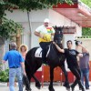

Isus a coborât pentru a doua oară pe pământ într-o zi ploioasă de februarie. A ales România, o ţară mică şi săracă, dar creştină până în măduva oaselor şi credincioasă nevoie mare. Dintr-o inspiraţie de-a dreptul divină, a preferat să nu ni se mai înfăţişeze în chip de copilaş nou-născut. Altfel, probabil şi-ar fi sfârşit [...]

Întrucât abatoarele occidentale implicate în scandalul lasagnei nechezătoare nu aparţin rudelor autorităţilor de control din ţările respective , cum se întâmplă la noi, românii au scăpat basma curată. Şi sunt decişi să contraatace. Cum moda acţiunilor de imagine fără substanţă a făcut prozeliţi, reprezentanţii industriei cărnii din România lansează campania “We love meat from Romania” [sic!]. Adică [...]
Primele fotografii de la eliberarea lui Adrian Năstase din închisoare aduc o surpriză considerabilă. Dorindu-şi măcar o ieşire din puşcărie triumfală, dacă intrarea a fost pe uşa din dos a spitalului penitenciar, Bombonel a vrut să respecte tradiţia locului. La Jilava, infractorii cu ştaif obişnuiesc să se libereze într-un mod spectaculos, ca să dea duşmanilor [...]

Cum cresc taxele şi impozitele, provocând scumpiri şi falimente în lanţ, cum apar şi temele patriotarde. Deşi nu ţine de foame şi nici nu-i foarte sănătoasă, tărâţa naţionalistă se umflă simultan cu preţurile, oferind populaţiei un sac de box pentru nemulţumiri. O fi frigiderul gol, s-or fi scumpit ţigările, berea, energia, gazele, alimentele şi benzina, [...]

Tocmai când britanicii formau primele cozi la aeroportul Heathrow, nerăbdători să se prăbuşească pe o canapea românească, autorităţile londoneze s-au apucat să pună fiola piloţilor de la TAROM. Ca nu cumva campania “why don’t you come over?” să devină “why did you crash over?”, Radu Cristea, comandantul aeronavei Airbus A318 care efectua zborul Londra – [...]

Deşi majoritatea spoturilor publicitare TV la produse ori lanţuri farmaceutice sunt fie anoste, fie enervante, reclama la Hemoroeasy – Hemoroizi la farmacie dovedeşte că există excepţii. Scenariul videoclipului cu şi despre hemoroizi e simplu: un dialog amuzant între farmacistă şi client, bazat pe confuzia creată de pronunţia mărcii în limba română. Atunci când ingeniozitatea e combinată [...]
Întrucât ciocoii lui Mark Zuckerberg sabotează campania de umflat tărâţa naţională pe Internet, Facebook a şters aplicaţia “Come to Romania” prin care ai noştri îi luau la mişto pe englezi, invitându-i să ne viziteze femeile şi ne bată drumurile inexistente. Gândul şi GMP Advertising, autorii campaniei “Why don’t you come over?”, nici spam n-au făcut, nici [...]

Dacă aţi urmărit vreodată cu atenţie filmările făcute în studioul televiziunii române pe 22 decembrie 1989, cu siguranţă aţi observat că nimeni nu a rostit atunci replica “Mircea, fă-te că lucrezi“. Că a fost o poantă revoluţionară, o amintire inexactă a unui participant entuziasmat (care a adaptat indicaţia regizorală a lui Ion Caramitru “Mircea, tu te [...]
Credeţi că poate fi un elev model? A primit ca temă pentru acasă compunerea cu titlul retoric de mai jos. Ce face şcolarul nostru? Procedează ca de obicei: caută textul pe Internet. Rigoarea documentării l-a determinat pe învăţăcel să citească povestea lui Ştefănuţ, elevul de nota 10 al şcolii româneşti. Ne îndoim că a avut curajul [...]

După ce am dezvăluit motivele pentru care supravegherea video la blocuri e periculoasă, au început să curgă întrebările: de e ilegal să montezi camere video pe scările şi în spaţiile comune ale blocurilor de locuinţe, iar la magazin se poate? Ce legislaţie românească şi comunitară protejează viaţa privată, intimă şi familială? Cine are dreptul să te [...]

Exclusiv Dan Diaconescu în direct şi în reluare (simultan)! V-aţi gândit la OTV, nu-i aşa? Greşit! OTV nu mai emite, dar modelul său de presă a fost preluat şi dezvoltat cu succes într-o altă televiziune de partid şi de ştiri. România TV, canalul deputatului PSD Sebastian Ghiţă, nu s-a mulţumit să cloneze subiectele ori listele cu [...]

Cum eliberarea celui mai recent martir al bomborului român e o chestiune de câteva zile, vă invităm să ne spuneţi cu ce credeţi că se va ocupa Adrian Năstase odată ieşit pe poarta puşcăriei. Mai trage o dată (eventual, după nişte poliţişti), intră la guvernare, face lecţii de tir cu Traian Băsescu ori va alege [...]